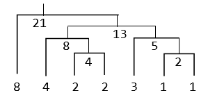

Anh Bo có n cây sắt lần lượt có chiều dài là a1, a2,..., an. Anh muốn hàn n cây sắt trên thành một cây duy nhất có chiều dài a1+ a2+ ... + an. Cách thực hiện là chọn 2 cây sắt bất kỳ hàn lại thành một cây và cứ tiếp tục như vậy cho đến khi chỉ còn lại một cây duy nhất. Để hàn 2 cây sắt có chiều dài x và y thì cần tốn chi phí là x+y. Bạn hãy giúp anh Bo tìm thứ tự hàn sao cho chi phí hàn là nhỏ nhất nhé.
Dữ liệu nhập: gồm 2 dòng
- Dòng thứ nhất là số nguyên n (1 ≤ n ≤ 105) là số lượng cây sắt.
- Dòng thứ hai gồm n số nguyên a1, a2,..., an (1 ≤ ai ≤ 109) là chiều dài của các cây sắt.
Dữ liệu xuất:
- Là một số nguyên xác định chi phí tối thiểu để hàn các thanh sắt.
Cây Huffman tương ứng là:

Tổng chi phí hàn: 2 + 4 + 5 + 8 + 13 + 21 = 53.